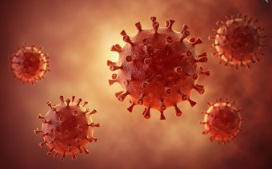

코로나는 세계보건기구 발표.
2019년 12월 1일 중국 후베이성 우한시.
중국은 미국에서 한달 빠르게 시작했다고 함.
한국은 구정 기간에 중국에 갔다가 들어온 사람들로 인해 시작되어 초기엔 우한폐렴이라고 했던것.
구정 때는 중국에서 들어오는 사람들을 검사도 안했었다.
내가 개인들에게 검사 받았냐고 물어봤었는데 안받았다고 했다.
주로 조선족,중국인들.
그리고 신천지 사이비가 우한신천지교회에 갔다와서 퍼지게 되었다.
발생 원인도 동물이나 박쥐 등 다양하게 말이 퍼져 불확실하다.
>